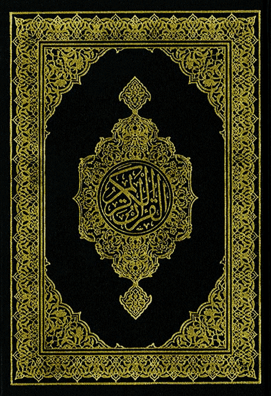

>
The Quran Explained:
A Guide for Non-Muslims
Outline
How to Navigate the Quran as a Non-Muslim
Terminology: Semitic Languages and the Name of God
Structure and Form of the Quran
Revelation and Themes of the Quran
Historical Context and Reasons for Revelation
The Quran and Other Scriptures
Outline ...
Scientific and Literary Aspects of the Quran
Frequently Asked Questions
How Muslims Use the Quran in Daily Life
Conclusion and Final Invitation
.
## Prerequisites > Semitic Languages and the Name of God Note: Before exploring the Quran, it's essential to understand two key topics: the Semitic languages and the meaning of "Allah." --- ## What Are Semitic Languages? - [**Semitic languages include**](#/2/11): Hebrew, Aramaic, Arabic, Maltese  Note: The Semitic language family includes Hebrew, Aramaic, Maltese, and Arabic. These languages have shaped the sacred texts of the Abrahamic religions: --- ## Sacred Texts of Abrahamic Religions: - **Hebrew**: Language of Prophet Moses; Old Testament. - **Aramaic**: Language of Jesus Christ; original Gospel. - **Arabic**: Language of Prophet Muhammad; Quran. Note: Sacred Texts of Abrahamic Religions --- ## Shared Roots of Semitic Languages - Scholars have recognized the connection for centuries. - Examples: - **Hebrew**: Shalom (peace) - **Aramaic**: Shalem (submit to God, be at peace) - **Arabic**: Salaam (peace) Note: Scholars have long recognized the close relationship between these languages. In 1538, Guillaume Postel published a comparative analysis of Hebrew, Arabic, and Aramaic, highlighting their shared roots. For example: --- ## Shared Roots of Semitic Languages ... - **Muslim (Arabic)**: "One who is surrendered." - **Mu-shalem (Aramaic)**: "One who is surrendered." - These terms reflect the shared concept of submission to God. Note: Linguistic Connections in Religion. The word **Muslim** in Arabic, meaning “one who is surrendered,” aligns with the Aramaic **Mu-shalem,** meaning “one who is surrendered.” --- ## The Name of God - **Aramaic**: Alaha - In Aramaic, the word for God is **“Alaha”** (ܐܠܗܐ) <!-- - Jesus Christ would have used **“Alaha”** for God. - Example from the **Peshitta** [(Aramaic Bible)](#/2/11): > "In the beginning, Alaha created the heavens and the earth." [(Genesis 1:1)](https://aramaica.org/peshitta/tanakh/genesis/genesis-1/) --> Note: In Aramaic, the word for God is **“Alaha”** (ܐܠܗܐ), the term Jesus Christ would have used. Similarly, in Arabic, we find **“Allah,”** closely related to “Alaha.” The Peshitta, an Aramaic translation of the Bible, uses **“Alaha”** in Genesis 1:1: --- ## The Name of God ... - **Arabic**: Allah - Closely related to the Aramaic **“Alaha.”** - **Historical Usage:** - Arab Christians and Jews have used **“Allah”** for centuries. - Today, millions of Arab Christians still refer to God as **“Allah.”** Note: For over five hundred years before the birth of Muhammad, Arab Christians and even some Jews in the Arabian peninsula used the word **Allah** for God. Roughly twenty million Arab Christians do so today. In fact, when Jesus spoke about God in everyday conversation, he would have used the same Aramaic word that every other Aramaic-speaker used: **Alaha**. --- ## Why Use “Allah” Instead of “God”? - **Some** translations of the Quran use **“Allah”** instead of *“God”* for precision. - **“God”** in English can refer to any deity. - Proto-Germanic **“gott”** was used for pagan beings. - **“Allah”** refers specifically to: - The Creator of the universe. - The God of Adam, Noah, Abraham, Moses, and Jesus. - Emphasizes God's **oneness** and **absolute power.** Note: **Some** translations of the Quran use **“Allah”** instead of *“God”* for precision. While “God” in English can refer to any worshiped entity (e.g., Proto-Germanic **gott**), **“Allah”** uniquely refers to the One Almighty Creator—the God of Adam, Noah, Abraham, Moses, and Jesus. The name **“Allah”** emphasizes God's oneness and absolute power, central to Islamic theology. --- ## Summary - Hebrew, Aramaic, and Arabic reflect a deep connection. - The name **“Allah”** highlights the unity of the Abrahamic faiths. - Understanding this context enriches our reading of the Quran. Note: Let's explore the Quran with this foundation in mind! --- ## References 1. [English to Aramaic](https://www.atour.com/cgi-bin/dictionary.cgi?string=God&Search_Field=Meaning) 2. [Peshitta Tanakh](https://aramaica.org/peshitta/tanakh/genesis/genesis-1/) 2. [Guillaume Postel](https://mospace.umsystem.edu/xmlui/bitstream/handle/10355/72830/GuillaumePostelWithLabelsExhibit.pdf) 3. [Wiki](https://en.wikipedia.org/wiki/Semitic_languages) Note: Tanakh[a] (/tɑːˈnɑːx/; Hebrew: תָּנָ״ךְ Tanaḵ) or The Hebrew Bible, also known in Hebrew as Miqra
Holy Quran
Translation vs. Original Arabic

Page 0
Page 1
Page 2
Page 604
Page 621
## Structure of the Quran --- ## Introduction - **Revealed over:** 23 years - Revealed singly and in groups over twenty-three years. - **Total Verses (Ayât):** 6236 - Meaning of "Ayah": Sign, proof, or miracle - Collected into sûrahs (sing. sura), usually translated as “chapter.” <aside class="notes"> The Quran contains 6236 verses (Arabic: آيات, romanized: âyât, plural of âyah, which literally means sign, proof, or miracle) . They were revealed singly and in groups over twenty-three years. </aside> --- ## Sûrahs (Chapters) - **Chapters (Sûrahs):** 114 - The word is derived from "enclosure"; - Often named after a theme, story, or or a distinctive word within it (keyword). - **Page Count:** Over 600 <aside class="notes"> The verses are collected into sûrahs (sing. sura), a word meaning “enclosure” that is usually translated as “chapter.” There are 114 sûrahs (or chapters) in more than 600 pages. A sûrah usually takes its name from the main theme, a story, or a distinctive word within it. </aside> --- ## Lengths of Sûrahs - **Introductory Chapter:** 1 - **Long Chapters (2-9):** 8 chapters, ~1/3 of the Quran - **Mid-Length Chapters (10-28):** 19 chapters, ~1/3 of the Quran - **Short Chapters (29-114):** 86 chapters, ~1/3 of the Quran <aside class="notes"> The Qur'an consists of one short introductory chapter, eight very long chapters, making up one-third of the Qur'an (2-9); 19 mid-length chapters, making up another one-third (10-28); and 86 short and very short ones of the last one-third (29-114) </aside> --- ## Arrangement of Sûrahs - The 114 suras of the Quran are of greatly **unequal length** - **Shortest Chapter:** Kawthar (108) - 3 verses - **Longest Chapter:** Baqara (2) - 286 verses - **Ordering Principle:** Roughly by length, not chronology <aside class="notes"> The 114 suras of the Quran are of greatly unequal length - the shortest (Kawthar; 108) is comprised of three verses, the longest (Baqara; 2) is 286 verses. The suras are roughly ordered according to length, not chronology. One reason why the Quran cannot be organized chronologically is that many suras are composed of verses that were revealed at different times, so a chronological ordering of verses could not be done without dismembering the suras. </aside> --- ## Interrelation: - Sequential thematic connections (e.g., Sûrahs 12-13, 37-38) - Shared themes across chapters (e.g., Sûrahs 55-56) <aside class="notes"> Although the Quran is not arranged chronologically, the sûrahs are perfectly interrelated. Some of the stories or themes that are touched on passingly in one sûrah are explained in detail in the next sûrah (see 12:105 and 13:1-17). In some cases, both the end of a sûrah and the beginning of the next sûrah cover the same subject (see 53:57-62 and 54:1-5). One sûrah might give some stories and the next will continue the narrative by adding more stories (see sûrahs 37 and 38). Additionally, two consecutive sûrahs might cover the exact same themes, but in a different order (see sûrahs 55 and 56). </aside> --- ## Rhyme and Verse Length - **Rhyming Style:** Typically rhymed verses - **Longest Verse:** 2:282 (~15 lines) - **Shortest Verse:** 20:1 (2 Arabic letters) <aside class="notes"> Depending on their respective sûrah, verses typically rhyme and vary in length—some are long (2:282 is the longest at fifteen lines long), while others are short (20:1 is the shortest at only two Arabic letters). (Press S) </aside> --- ## The Basmalah - **Phrase:** "In the Name of Allah—the Most Compassionate, Most Merciful" - **Presence:** At the start of every sûrah except Sûrah 9 <aside class="notes"> With the exception of Sûrah 9, all sûrahs begin with the basmalah: “In the Name of Allah—the Most Compassionate, Most Merciful.” </aside> --- ## Meccan vs. Medinian Sûrahs - **Meccan Sûrahs:** 86 chapters - Focus: Restoring belief in One God - **Medinian Sûrahs:** 28 chapters - Focus: Commandments on relationships with Allah, humans, and creation - **Blended Verses:** Some Meccan chapters contain Medinian verses and vice versa <aside class="notes"> Of the Quran's 114 sûrahs, eighty-six are classified as Meccan because they were revealed before the Prophet's emigration to Medina. These sûrahs focus mainly on restoring the belief in the One True God. The other twenty-eight sûrahs are categorized as Medinian since they were revealed after the Prophet's emigration from Mecca with an emphasis on the commandments regarding a Muslim's relationship with their Lord, their fellow humans, and the rest of Allah's creation. Some Meccan sûrahs may have Medinian verses and vice versa. Sûrahs and passages were revealed over a period of twenty-three years to address issues facing the Muslim community. As instructed by Allah through the angel Gabriel, the Prophet (ﷺ) ordered his scribes to arrange sûrahs mostly according to their lengths, with the longest sûrahs first, not chronologically. </aside> --- ## Logical Division of the Quran - **30 Parts (Ajzâ'):** - Each divided into 8 subparts (Arbâ') - **Purpose:** Facilitates reading and memorization <aside class="notes"> The Quran is divided into logical 30 parts (or ajzâ', plural of juz'), each with 8 subparts (or arbâ', plural of rub'), making it convenient for reading and memorization. </aside> --- ## Summary - **Revealed:** Over 23 years in Mecca and Medina - **Content:** 6236 verses across 114 chapters - **Themes:** Faith, relationships, and life guidance - **Structure:** Organized by length but interconnected in themes
## Revelation  --- ## Chronological order - Meccan surahs (86 chapters) <pre> 96, 68, 73, 74, 1, 111, 81, 87, 92, 89, 93, 94, 103, 100, 108, 102, 107, 109, 105, 113, 114, 112, 53, 80, 97, 91, 85, 95, 106, 101, 75, 104, 77, 50, 90, 86, 54, 38, 7, 72, 36, 25, 35, 19, 20, 56, 26, 27, 28, 17, 10, 11, 12, 15, 6, 37, 31, 34, 39, 40, 41, 42, 43, 44, 45, 46, 51, 88, 18, 16, 71, 14, 21, 23, 32, 52, 67, 69, 70, 78, 79, 82, 84, 30, 29, 83. </pre> --- ## Themes - Monotheism - Majestic I - Tawhid (vs Trinity) - Ijaza - Tawhid (vs Trinity) --- ## ?? --- ## References 1. Note: ??